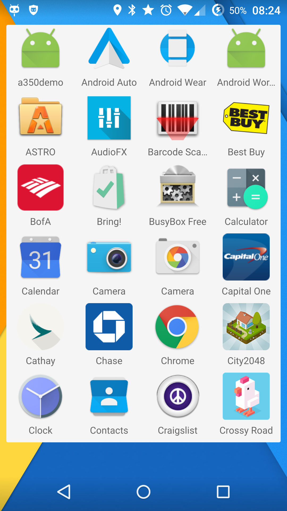

QuteLauncher
QML Android Launcher
View on GitHub
Download .zip
Download .tar.gz
Download APK
Qute Launcher
Qt Android launcher.
Features:
Application icon retrieval.
Detect app installation or removal.
TODO:
Add wallpaper picker.
Support themes.
Investigate if it is possible to integrate widgets.
Screenshot:
